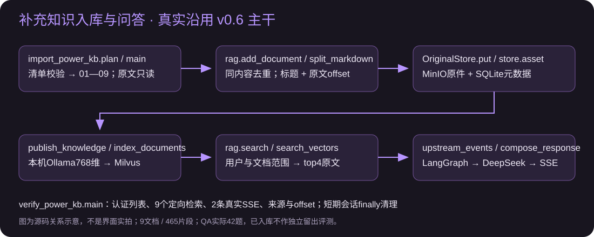

2026-11-17 / v0.6.0 / 工作目录：/Users/zz/Desktop/A4G

本轮新增两个本机脚本，其余类与函数沿用；导入9份、465片段。图仅为调用示意，无界面实拍。
| 源码路径（相对工作目录） | 类/函数 | 职责与调用逻辑 |
|---|---|---|
| scripts/import_power_kb.py | plan(source) | 只把清单当数据；预检文件名、目录范围、编码与大小，无写入。 |
| scripts/import_power_kb.py | main() | 显式--apply才调用现有入库；指定现有账号；逐文件记录ID/哈希/片段，校验MinIO读回及offset，失败留局部记录。 |
| src/backend/app/rag.py | add_document / publish_knowledge | 同内容去重；保存原件；pending资产经持久化索引后ready，索引异常撤回SQL资产并尽力清向量。 |
| src/backend/app/markdown_chunks.py | split_markdown | ATX标题与现有420/60递归切分；保留原始文本和精确offset。未新加YAML过滤或表格原子切分。 |
| src/backend/app/documents.py | OriginalStore.put / get | 沿用MinIO私有原件；验收按SHA256比对读回。 |
| src/backend/app/embeddings.py | OllamaSemanticEmbeddings._embed | 本地EmbeddingGemma，16块一批，校验768维/数量/有限数及归一化。 |
| src/backend/app/repositories/milvus.py | index_documents / search_vectors | 用户/模型指纹集合与稳定chunk键；过滤SQL授权文档，返回top4。 |
| src/backend/app/upstream/service.py；graph.py | upstream_events / retrieve_evidence / compose_response | LangGraph召回后将原文交已授权DeepSeek，转发实际增量并附来源；上游不执行业务草案。 |
| scripts/verify_power_kb.py | main() | 只做本机验收；内存令牌的短期会话finally清理，2条真实问答只验证链路，不自动判为专业正确。 |
真实入库、去重与链路检查通过；节点表格回答不完整是已知缺口。QA自述60、实数42；已入库不作独立留出集。专业内容未独立审校，原资料未改。浏览器控制超时，本轮HTTP与服务验证不等同界面交互验证。